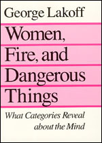
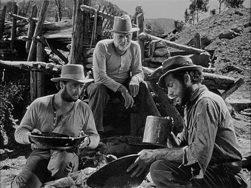

A blended space which borrows from both the Meal and Commercial Transaction frames.
Adds new aspects like serving staff, additional behavioral expectations like tipping, rules relating to shared social spaces, etc.
Metaphor
When two domain frames are compressed into a blended space in which aspects of target domain are used to conceptualize the source domain.
(or, auf Anglish...)
When you use something you know deeply to get a handle on something you know less well (or that doesn't yet exist, is more abstract, etc).
Primary Metaphors
MORE IS UP
“Her popularity soared.”
“Profits are down this quarter.”
WARMTH IS AFFECTION
“They gave her a warm reception.”
“He gave us the cold shoulder.”
KNOWING IS SEEING
“I see what you're saying.”
“The documentation is a little opaque.”
More Primary Metaphors
Important is Big
Happy Is Up
Understanding Is Grasping
Intimacy Is Closeness
Difficulties Are Burdens
Organization Is Physical Structure
Time Is Motion
Relationships Are Enclosures
Categories Are Containers
(Many, many others...)
“The greatest thing by far is to be a master of metaphor.
It is the one thing that cannot be learned from others; it is also a sign of genius, since a good metaphor implies an eye for resemblance.”
--Aristotle, De Poetica, 322 B.C.
Metaphor In Software Development
User Interface/User Experience
What most people think of when they think of metaphor in a computing context.
Iconography, desktops, windows, and trashcans are, like poetry, only the most visible use of metaphor.
The UNIX command-line filesystem interface depends deeply on primary metaphors of containment and locality.
GUI metaphors go wrong when their conceptual blends contain elements that do no meaningful compression.
Project Management
The language and underlying concepts of project management are an ode to one primary metaphor:
A TASK IS A JOURNEY
“We are making good progress.”
“We just made it to our latest milestone.”
“I hit a major roadblock in the database code.”
“We need to get things back on track.”
Agile Programming, especially (Sprint, Bottleneck, Impediment, etc)
Application Architecture/API Design
Most work is analogical (“automate this business process”).
Even when mimicking an existing process, thinking metaphorically can expand your frame of reference beyond data and transactions.
Metaphoric analysis especially helpful when breaking new ground.
Stand back from the problem and ask, “what is this like”.
Case Study: Oakley
The Problem:
Nearly 100 regional offices, worldwide.
Each office had its own procedures for collecting and storing customer contact information.
Corporate HQ wanted a normalized, dependable contact list for all registered customers.
The Solution:
Consternation.
Panic.
Frustration.
“I might as well be panning for freakin' gold...”
“Hmm, you know, this is sorta like panning for gold...”
Cognitive Context

Had recently read George Lakoff's Women, Fire, and Dangerous Things.
Introduces many ideas behind this talk.
Ideas further explored in Metaphors We Live By.

Had recently seen John Huston's The Treasure of the Sierra Madre.
A tale of greed and danger among miners prospecting for gold in the Mexican mountains.
Lots of montages of mining work.
“Data Mining”
Placer Mining
Customer Data Aggregation
Diggers
-->
Scripts to pull customer data from individual offices.
Hopper
-->
Local storage for raw records.
Sluice
-->
Event-driven record processing pipeline.
Screens/Riffles
-->
Various filters to clean up/throw out erroneous records.
Assay
-->
Validation and normalization of filtered records via 3rd party.
Vault
-->
Database storage for known-good records.
Lessons
Metaphor is imprecise (but that's okay!)
Gave us an easy way to get our arms around a complex problem.
Gave us ready-made application structure.
System workflow.
Entity names.
Class hierarchy.
In short, applying a solution from one domain frame to a problem in a less well known domain brought the problem down to human scale, made us more productive.
Tips, Tricks, and Hacks
Remember that you are already constantly using metaphoric reasoning, even when it's not obvious or intentional.
Set time aside to let your mind wander about the problem.
Don't try to force it. Associative reasoning isn't susceptible to grit-your-teeth-and-get-er-done.
If you get stuck, try looking for vital relations. (“This has an $x, what else has an $x?”)
Indulge your curiosity. You never know what obscure corner an "AHA!" might jump out from.
Puns, puns, and moar puns. They help keep your blending faculties quick and supple.
You can't unsee this talk. Expect to start seeing metaphoric language everywhere. [insert evil laugh]